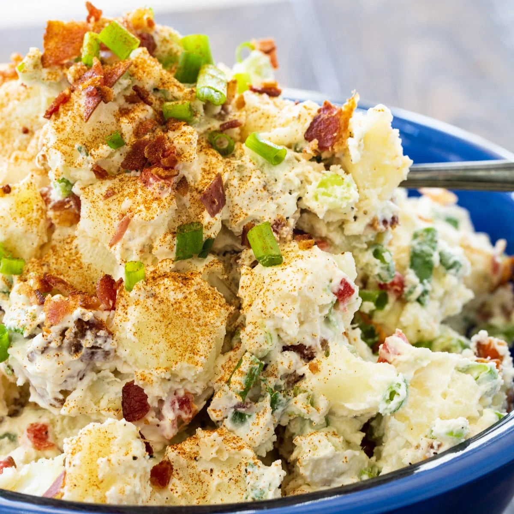

With a blend of mayonnaise and sour cream as its base, this creamy potato salad is super tasty. There’s chopped celery, diced pimentos, green onions, and paprika for added flavor.
It’s a simple potato salad with the smoky flavor of bacon really taking center stage. If you wanted to simplify things, you could use a packet of bacon bits instead of cooking bacon.
Cooking Time: 25 minutes
Servings: 8